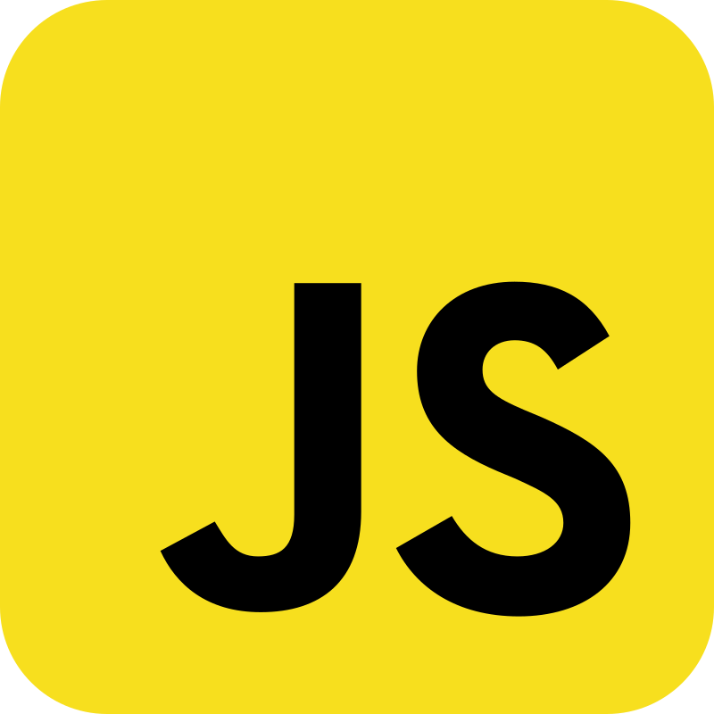
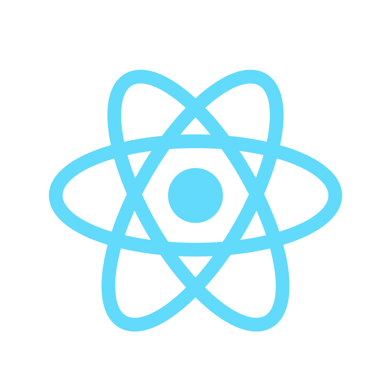

Hi, I'm
Mary Hardy
I am a passionate web developer with expertise in creating dynamic and responsive websites. I love turning ideas into reality through code.

I am a passionate web developer with expertise in creating dynamic and responsive websites. I love turning ideas into reality through code.
I am a dedicated web developer with a passion for creating beautiful, responsive, and functional websites. With a strong foundation in HTML, CSS, and JavaScript, I focus on writing clean, efficient code that enhances user experience. I enjoy turning ideas into visually appealing and interactive digital solutions. Continuously learning new technologies and design trends, I aim to stay updated in the ever-evolving world of web development. My goal is to grow as a developer who builds meaningful, user-centered websites that not only look great but also deliver smooth performance across all platforms.
I have more than 10 years experience building software for clients all over the world. Below is a quick overview of my main technical skill sets and technologies i use. Want to find out more about my experience? Check out my online resume and project portfolio.

JavaScript is a powerful, high-level programming language used to create interactive and dynamic web content. It runs in browsers and servers, allowing developers to handle logic, animations, and user interactions, making web pages functional and responsive across different devices and platforms.

React is a JavaScript library developed by Facebook for building fast and interactive user interfaces. It uses a component-based architecture and virtual DOM to optimize performance, enabling developers to create dynamic, reusable, and efficient front-end applications with smooth user experiences.

Node.js is a runtime environment that allows JavaScript to run outside the browser, primarily on servers. It uses the Chrome V8 engine for fast execution and supports asynchronous, event-driven programming to build scalable, efficient, and real-time applications like APIs and chat systems.

MongoDB is a popular NoSQL database that stores data in flexible, JSON-like documents instead of tables. It allows developers to handle unstructured or semi-structured data efficiently, making it ideal for modern web applications requiring scalability, flexibility, and high performance across distributed systems.
List skill/technologies here. You can change the icon above to any of the 1500+ FontAwesome 5 free icons available. Aenean commodo ligula eget dolor.
List skill/technologies here. You can change the icon above to any of the 1500+ FontAwesome 5 free icons available. Aenean commodo ligula eget dolor.
List skill/technologies here. You can change the icon above to any of the 1500+ FontAwesome 5 free icons available. Aenean commodo ligula eget dolor.
List skill/technologies here. You can change the icon above to any of the 1500+ FontAwesome 5 free icons available. Aenean commodo ligula eget dolor.
List skill/technologies here. You can change the icon above to any of the 1500+ FontAwesome 5 free icons available. Aenean commodo ligula eget dolor.
List skill/technologies here. You can change the icon above to any of the 1500+ FontAwesome 5 free icons available. Aenean commodo ligula eget dolor.